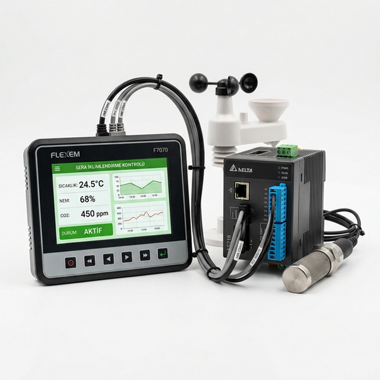
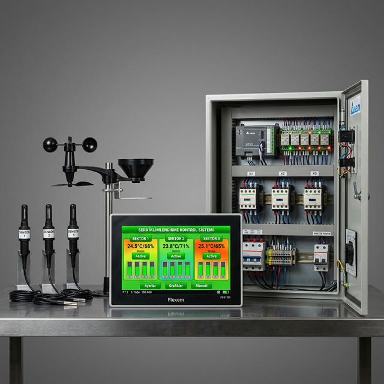
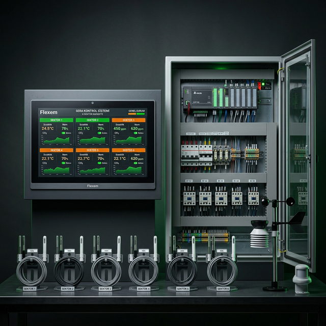

Sera İklimlendirme Sistemleri ve İklim Kontrol Otomasyonu
OK Otomasyon'un sera iklimlendirme sistemleri, Flexem dokunmatik HMI panel ve Delta PLC kontrollü, modüler yapıda sera iklim kontrol çözümleridir. Seranızın ölçeğine göre 1'den 6 sektöre kadar genişleyebilen sera iklimlendirme otomasyonu ile ısıtma, soğutma, havalandırma, perdeleme, sisleme ve fan pad kontrollerini tek merkezden yönetin.
Sera İklimlendirme Kontrol Fonksiyonları
🔥 Sera Isıtma Sistemi
Sera ısıtma kontrolü: Sıcak su kazanı, sıcak hava kazanı ve borulu ısıtma sistemleri. Gece/gündüz sıcaklık programları, kademeli ısıtma kontrolü, enerji tasarruf modları.
❄️ Sera Soğutma Sistemi
Sera soğutma ve fan pad sistemi: Evaporatif soğutma, pad fan soğutma, sisleme bazlı soğutma. Kademeli fan kontrolü, otomatik pad ıslatma.
🌪️ Sera Havalandırma Sistemi
Sera havalandırma kontrolü: Çatı ve yan havalandırma motorları, rüzgar hızı ve yönüne göre otomatik açma/kapama, yağmur sensörü koruması.
🌫️ Sera Sisleme Sistemi
Sera sisleme ve sera nemlendirme: Yüksek basınçlı sisleme pompaları, zone bazlı nem kontrolü, nem sensörleri ile otomatik çalıştırma/durdurma.
🎭 Sera Perdeleme Sistemi
Sera perdeleme otomasyonu: Gölgeleme ve enerji perdeleri. Işık yoğunluğu ve sıcaklığa göre otomatik açma/kapama, motorlu kontrol.
📡 Sera Sensörleri
Sera sıcaklık sensörü, sera nem sensörü, sera CO2 sensörü, sera rüzgar sensörü, sera yağmur sensörü. Tüm sensör verileri merkezi işleme ünitesinde anlık değerlendirilir.
Sera İklimlendirme Sistemi Modelleri

1 Sektörlü Sera İklimlendirme Sistemi
Küçük ölçekli seralar için temel sera iklim kontrol sistemi. Tek bölgeli ısıtma, havalandırma ve perdeleme kontrolü. Flexem 7" HMI panel ve Delta PLC ile kolay kullanım.

3 Sektörlü Sera İklimlendirme Sistemi — En Çok Tercih Edilen
Orta ölçekli seralar için ideal sera iklimlendirme otomasyonu. 3 bağımsız iklim sektörü, tam kapsamlı ısıtma + havalandırma + perdeleme + sisleme + fan pad kontrolü. CO2 kontrol sistemi opsiyonel.

6 Sektörlü Sera İklimlendirme Sistemi — Endüstriyel
Büyük endüstriyel seralar için tam kapsamlı sera iklimlendirme sistemi. 6 bağımsız iklim sektörü, sera ısıtma, sera soğutma, sera havalandırma, sera nemlendirme, sera perdeleme, sera CO2 kontrol. AgriNexus SCADA ile uzaktan izleme ve kontrol.
Sera İklimlendirme Otomasyonu Nasıl Çalışır?
Sera iklimlendirme otomasyonu, seranızdaki sıcaklık, nem, CO₂ ve ışık değerlerini sürekli ölçen sensörlerden gelen verileri merkezi bir sera kontrol sisteminde değerlendirir. Delta PLC işlemci, Flexem HMI dokunmatik ekran ve sensör ağı ile sera iklim kontrolü tam otomatik yönetilir.
Akıllı sera teknolojileri sayesinde, seranızın sıcaklık kontrolü, nem kontrolü ve CO2 dozlama işlemleri 7/24 otomatik olarak gerçekleştirilir. AgriNexus SCADA yazılımı ile uzaktan sera izleme ve kontrol imkanı sunulur.
Neden OK Otomasyon İklimlendirme Sistemi?
- 25+ yıllık sera otomasyonu deneyimi
- Kendi Ar-Ge ve üretim — Antalya, Türkiye
- 1'den 6 sektöre kadar modüler yapı
- Delta PLC + Flexem HMI güvenilir donanım
- AgriNexus SCADA ile uzaktan sera kontrol
- 7 ülkede tamamlanmış anahtar teslim sera projeleri
- Sulama ve gübreleme makineleri ile tam entegrasyon
Sera İklimlendirme Sistemi İçin Teklif Alın
Sera projenize uygun iklimlendirme sistemi çözümünü birlikte belirleyelim.
📩 Teklif Alveya WhatsApp: +90 533 494 71 93